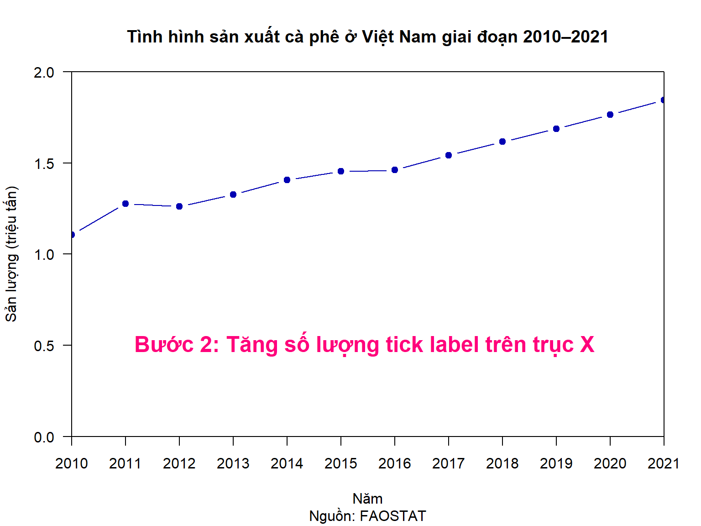
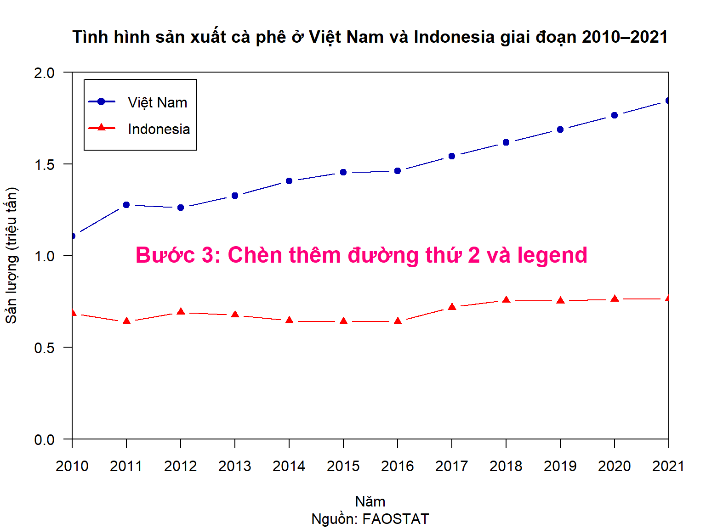
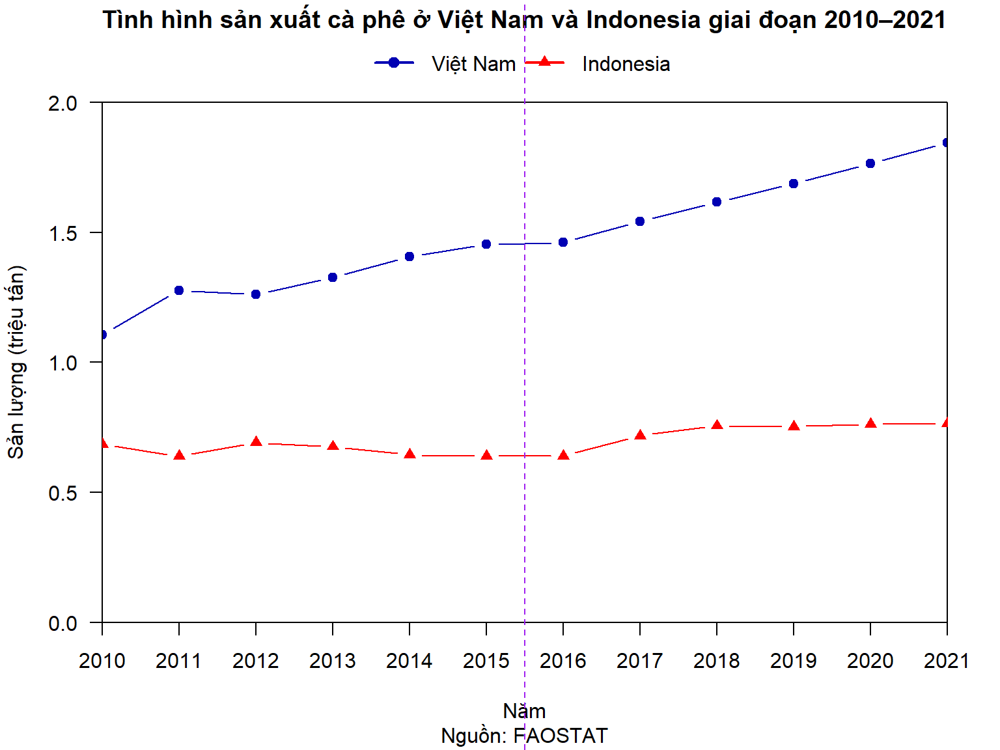
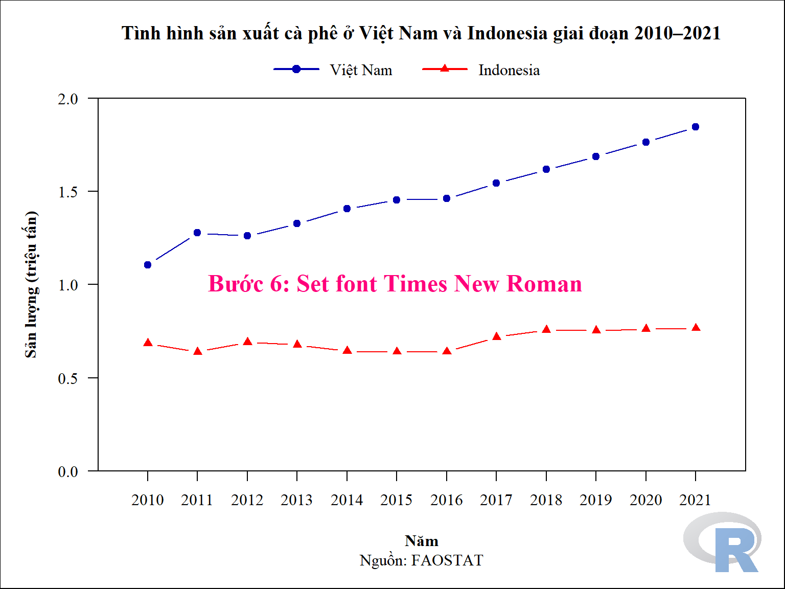
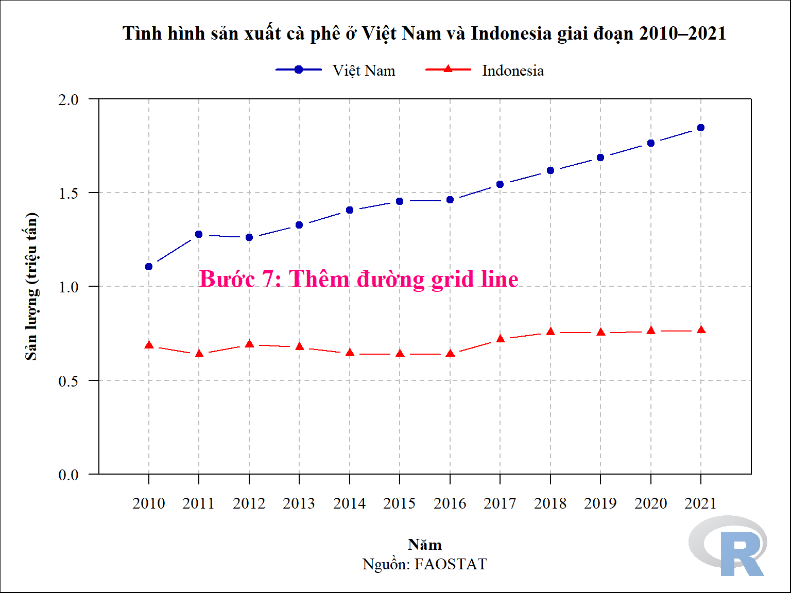
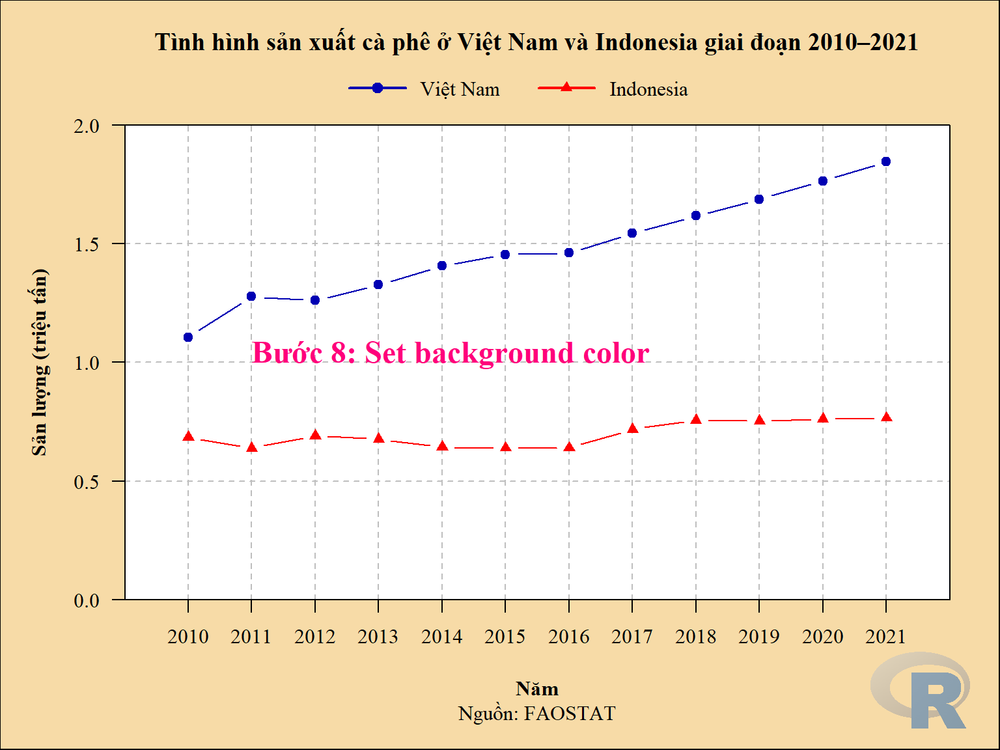

area item year production area_harvested yield
178 Viet Nam Coffee, green 2021 1.845033 0.653192 2.82
179 Viet Nam Coffee, green 2020 1.763476 0.637563 2.77
180 Viet Nam Coffee, green 2019 1.686765 0.624100 2.70
181 Viet Nam Coffee, green 2018 1.616307 0.618879 2.61
182 Viet Nam Coffee, green 2017 1.542398 0.605178 2.55
183 Viet Nam Coffee, green 2016 1.460800 0.597597 2.44
184 Viet Nam Coffee, green 2015 1.452999 0.593800 2.45
185 Viet Nam Coffee, green 2014 1.406469 0.589041 2.39
186 Viet Nam Coffee, green 2013 1.326688 0.581381 2.28
187 Viet Nam Coffee, green 2012 1.260463 0.572600 2.20
188 Viet Nam Coffee, green 2011 1.276506 0.543865 2.35
189 Viet Nam Coffee, green 2010 1.105700 0.511900 2.16
3.2 Vẽ đồ thị đường (linechart)
Thông số mặc định
Show the code
plot(production ~ year, data = coffee_vn_2010_2021,las =1,xaxs ="i",yaxs ="i",col ="#0000b3",xlim =c(2010, 2021),ylim =c(0, 2),pch =19,type ="b",xlab ="Năm",ylab ="Sản lượng (triệu tấn)",main ="Tình hình sản xuất cà phê ở Việt Nam giai đoạn 2010–2021",sub ="Nguồn: FAOSTAT" )text(x =2011, y =0.5, labels ="Bước 1: Vẽ đồ thị 1 đường dùng\nthông số mặc định", cex =1.5,col ="#ff007b", font =2,pos =4)
plot(production ~ year, data = coffee_vn_2010_2021,las =1,xaxs ="i",yaxs ="i",col ="#0000b3",xlim =c(2010, 2021),ylim =c(0, 2),pch =19,type ="b",xlab ="Năm",ylab ="Sản lượng (triệu tấn)",main ="Tình hình sản xuất cà phê ở Việt Nam giai đoạn 2010–2021",sub ="Nguồn: FAOSTAT",xaxt ="n"# remove thông tin trục x# yaxt="n" )# Changing x axisxtick <-seq(from =2010, to =2021, by =1) # x tick labelaxis(side =1, at = xtick, labels =TRUE) # vẽ trục x (side = 1)text(x =2011, y =0.5, labels ="Bước 2: Tăng số lượng tick label trên trục X", cex =1.5,col ="#ff007b", font =2,pos =4)

Xoay tick label
Show the code
plot(production ~ year, data = coffee_vn_2010_2021,las =1,xaxs ="i",yaxs ="i",col ="#0000b3",xlim =c(2010, 2021),ylim =c(0, 2),pch =19,type ="b",xlab ="Năm",ylab ="Sản lượng (triệu tấn)",main ="Tình hình sản xuất cà phê ở Việt Nam giai đoạn 2010–2021",sub ="Nguồn: FAOSTAT",xaxt ="n"# remove thông tin trục x# yaxt="n" )# Changing x axisxtick <-seq(from =2010, to =2021, by =1) # x tick labelaxis(side =1, at = xtick, labels =FALSE) # ẩn giá trị x tick label mặc địnhtext(x = xtick, y =par("usr")[3], labels = xtick, srt =45, # pos = 1, # adj = c(0.5, 3),adj =c(1.5, 2),xpd =TRUE)
area item year production area_harvested yield
239 Indonesia Coffee, green 2021 0.765415 1.249615 0.61
240 Indonesia Coffee, green 2020 0.762380 1.250452 0.61
241 Indonesia Coffee, green 2019 0.752512 1.245359 0.60
242 Indonesia Coffee, green 2018 0.756051 1.252826 0.60
243 Indonesia Coffee, green 2017 0.717962 1.238598 0.58
244 Indonesia Coffee, green 2016 0.639305 1.228512 0.52
245 Indonesia Coffee, green 2015 0.639412 1.230001 0.52
246 Indonesia Coffee, green 2014 0.643900 1.230500 0.52
247 Indonesia Coffee, green 2013 0.675800 1.241700 0.54
248 Indonesia Coffee, green 2012 0.691163 1.233900 0.56
249 Indonesia Coffee, green 2011 0.638600 1.293000 0.49
250 Indonesia Coffee, green 2010 0.684076 1.268476 0.54
Show the code
coffee_vn_2010_2021
area item year production area_harvested yield
178 Viet Nam Coffee, green 2021 1.845033 0.653192 2.82
179 Viet Nam Coffee, green 2020 1.763476 0.637563 2.77
180 Viet Nam Coffee, green 2019 1.686765 0.624100 2.70
181 Viet Nam Coffee, green 2018 1.616307 0.618879 2.61
182 Viet Nam Coffee, green 2017 1.542398 0.605178 2.55
183 Viet Nam Coffee, green 2016 1.460800 0.597597 2.44
184 Viet Nam Coffee, green 2015 1.452999 0.593800 2.45
185 Viet Nam Coffee, green 2014 1.406469 0.589041 2.39
186 Viet Nam Coffee, green 2013 1.326688 0.581381 2.28
187 Viet Nam Coffee, green 2012 1.260463 0.572600 2.20
188 Viet Nam Coffee, green 2011 1.276506 0.543865 2.35
189 Viet Nam Coffee, green 2010 1.105700 0.511900 2.16
Show the code
## dataset coffee_vn_2010_2021plot(production ~ year, data = coffee_vn_2010_2021,las =1,xaxs ="i",yaxs ="i",col ="#0000b3",xlim =c(2010, 2021),ylim =c(0, 2),pch =19,type ="b",xlab ="Năm",ylab ="Sản lượng (triệu tấn)",main ="Tình hình sản xuất cà phê ở Việt Nam và Indonesia giai đoạn 2010–2021",sub ="Nguồn: FAOSTAT",xaxt ="n"# remove thông tin trục x# yaxt="n" )## dataset coffee_indo_2010_2021points(production ~ year, data = coffee_indo_2010_2021,col ="red",pch =17,type ="b" )# Changing x axisxtick <-seq(from =2010, to =2021, by =1) # x tick labelaxis(side =1, at = xtick, labels =TRUE) # vẽ trục x (side = 1)# legendlegend(x ="topleft", y =NULL, legend =c("Việt Nam", "Indonesia"),col =c("#0000b3", "red"),lty =c(1, 1), cex =1,pch =c(19, 17),lwd =2,x.intersp =1,y.intersp =1.5,inset =0.02, # chỉ có tác dụng khi x là keywordbox.lty =1,horiz =FALSE )text(x =2011, y =1, labels ="Bước 3: Chèn thêm đường thứ 2 và legend", cex =1.5,col ="#ff007b", font =2,pos =4)

Thay đổi vị trí legend
Cách 1: Lấy tọa độ từ legend có sẵn
Show the code
plot(production ~ year, data = coffee_vn_2010_2021,las =1,xaxs ="i",yaxs ="i",col ="#0000b3",xlim =c(2010, 2021),ylim =c(0, 2),pch =19,type ="b",xlab ="Năm",ylab ="Sản lượng (triệu tấn)",# main = "Tình hình sản xuất cà phê ở Việt Nam và Indonesia giai đoạn 2010–2021",sub ="Nguồn: FAOSTAT",xaxt ="n"# remove thông tin trục x# yaxt="n" )## dataset coffee_indo_2010_2021points(production ~ year, data = coffee_indo_2010_2021,col ="red",pch =17,type ="b" )# Changing x axisxtick <-seq(from =2010, to =2021, by =1) # x tick labelaxis(side =1, at = xtick, labels =TRUE) # vẽ trục x (side = 1)# Thay đổi vị trí titletitle(main ="Tình hình sản xuất cà phê ở Việt Nam và Indonesia giai đoạn 2010–2021",line =3)# legend############## lấy tọa độleg <-legend(x ="top",y =NULL,legend =c("Việt Nam", "Indonesia"),col =c("#0000b3", "red"),lty =c(1, 1),cex =1,pch =c(19, 17),lwd =2,# x.intersp = 2,# y.intersp = 2,# inset = 0.02,box.lty =1,horiz =TRUE,xpd =TRUE,plot =FALSE)#############legend(x = leg$rect$left, y =2.25, legend =c("Việt Nam", "Indonesia"),col =c("#0000b3", "red"),lty =c(1, 1), cex =1,pch =c(19, 17),lwd =2,x.intersp =1,y.intersp =1,box.lty =0,horiz =TRUE,xpd =TRUE )abline(v = (2021+2010) /2, col ="purple", lty =2, xpd =TRUE)

Cách 2: Dùng tham số xjust và yjust trong lệnh legend()
Show the code
plot(production ~ year, data = coffee_vn_2010_2021,las =1,xaxs ="i",yaxs ="i",col ="#0000b3",xlim =c(2009, 2022),ylim =c(0, 2),pch =19,type ="b",xlab ="Năm",ylab ="Sản lượng (triệu tấn)",# main = "Tình hình sản xuất cà phê ở Việt Nam và Indonesia giai đoạn 2010–2021",sub ="Nguồn: FAOSTAT",xaxt ="n"# remove thông tin trục x# yaxt="n" )## dataset coffee_indo_2010_2021points(production ~ year, data = coffee_indo_2010_2021,col ="red",pch =17,type ="b" )# Changing x axisxtick <-seq(from =2009, to =2022, by =1) # x tick labelxtick[1] <-""xtick[14] <-""axis(side =1, at = xtick, labels =TRUE) # vẽ trục x (side = 1)# Thay đổi vị trí titletitle(main ="Tình hình sản xuất cà phê ở Việt Nam và Indonesia giai đoạn 2010–2021",line =3)# legendlegend(x = (2022+2009) /2, y =2.05, legend =c("Việt Nam", "Indonesia"),col =c("#0000b3", "red"),lty =c(1, 1), cex =1,pt.cex =1, # cex của pointpch =c(19, 17),lwd =2,x.intersp =2,# y.intersp = 1,xjust =0.5,yjust =0,box.lty =0,horiz =TRUE,xpd =TRUE,adj =c(0.4, 0.5), # chỉnh text legendmerge =TRUE# gộp pch và line )text(x =2011, y =1, labels ="Bước 4: Chỉnh lại legend và trục X\ngiúp đồ thị rõ ràng hơn", cex =1.5,col ="#ff007b", font =2,pos =4)
par(mar =c(6, 5, 5, 2))plot(production ~ year, data = coffee_vn_2010_2021,las =1,xaxs ="i",yaxs ="i",col ="#0000b3",xlim =c(2009, 2022),ylim =c(0, 2),pch =19,type ="b",xlab ="Năm",ylab ="Sản lượng (triệu tấn)",# main = "Tình hình sản xuất cà phê ở Việt Nam và Indonesia giai đoạn 2010–2021",sub ="Nguồn: FAOSTAT",xaxt ="n"# remove thông tin trục x# yaxt="n" )## dataset coffee_indo_2010_2021points(production ~ year, data = coffee_indo_2010_2021,col ="red",pch =17,type ="b" )# Changing x axisxtick <-seq(from =2009, to =2022, by =1) # x tick labelxtick[1] <-""xtick[14] <-""axis(side =1, at = xtick, labels =FALSE) # vẽ trục x (side = 1)text(x = xtick, y =par("usr")[3], labels = xtick, srt =0, # pos = 1,adj =c(0.5, 3),xpd =TRUE)# Thay đổi vị trí titletitle(main ="Tình hình sản xuất cà phê ở Việt Nam và Indonesia giai đoạn 2010–2021",line =3)# legendlegend(x = (2022+2009) /2, y =2.05, legend =c("Việt Nam", "Indonesia"),col =c("#0000b3", "red"),lty =c(1, 1), cex =1,pt.cex =1, # cex của pointpch =c(19, 17),lwd =2,x.intersp =2.5,# y.intersp = 1,xjust =0.5,yjust =0,box.lty =0,horiz =TRUE,xpd =TRUE,adj =c(0.4, 0.5), # chỉnh text legendmerge =TRUE# gộp pch và line )text(x =2011, y =1, labels ="Bước 5: Đồ thị cơ bản hoàn thiện", cex =1.5,col ="#ff007b", font =2,pos =4)par(new =TRUE) # workaround for grid.raster# plot(production ~ year,# data = coffee_vn_2010_2021,# type = "n",# xlab = "",# ylab = "",# xaxt = "n",# yaxt = "n")box(which ="plot")box(which ="figure")box(which ="outer")library(png)library(grid)logor <-readPNG("logor.png")grid.raster(logor, x =0.92, y =0.08, width =0.1)
par(mar =c(6, 5, 5, 2))par(font.lab =2)windowsFonts(font_1 =windowsFont("Times New Roman"))plot(production ~ year, data = coffee_vn_2010_2021,family ="font_1",las =1,xaxs ="i",yaxs ="i",col ="#0000b3",xlim =c(2009, 2022),ylim =c(0, 2),pch =19,type ="b",xlab ="Năm",ylab ="Sản lượng (triệu tấn)",# main = "Tình hình sản xuất cà phê ở Việt Nam và Indonesia giai đoạn 2010–2021",sub ="Nguồn: FAOSTAT",xaxt ="n"# remove thông tin trục x# yaxt="n" )## dataset coffee_indo_2010_2021points(production ~ year, data = coffee_indo_2010_2021,col ="red",pch =17,type ="b" )# Changing x axisxtick <-seq(from =2009, to =2022, by =1) # x tick labelxtick[1] <-""xtick[14] <-""axis(side =1, at = xtick, labels =FALSE) # vẽ trục x (side = 1)text(x = xtick, y =par("usr")[3], labels = xtick, srt =0, # pos = 1,adj =c(0.5, 3),xpd =TRUE,family ="font_1")# Thay đổi vị trí titletitle(main ="Tình hình sản xuất cà phê ở Việt Nam và Indonesia giai đoạn 2010–2021",line =3,family ="font_1")# legendpar(family ="font_1")legend(x = (2022+2009) /2, y =2.05, legend =c("Việt Nam", "Indonesia"),col =c("#0000b3", "red"),lty =c(1, 1), cex =1,pt.cex =1, # cex của pointpch =c(19, 17),lwd =2,x.intersp =2.5,# y.intersp = 1,xjust =0.5,yjust =0,box.lty =0,horiz =TRUE,xpd =TRUE,adj =c(0.4, 0.5), # chỉnh text legendseg.len =3,merge =TRUE# gộp pch và line )text(x =2011, y =1, labels ="Bước 6: Set font Times New Roman", cex =1.5,col ="#ff007b", font =2,pos =4,family ="font_1")par(new =TRUE) # workaround for grid.rasterbox(which ="plot")box(which ="figure")box(which ="outer")library(png)library(grid)logor <-readPNG("logor.png")grid.raster(logor, x =0.92, y =0.08, width =0.1)

Show the code
par(mar =c(6, 5, 5, 2))par(font.lab =2)windowsFonts(font_1 =windowsFont("Times New Roman"))plot(production ~ year, data = coffee_vn_2010_2021,xaxs ="i",yaxs ="i",xlim =c(2009, 2022),ylim =c(0, 2),type ="n",xlab ="",ylab ="",xaxt ="n",yaxt ="n")grid(nx =13, ny =4,lty =2, col ="gray", lwd =1)par(new =TRUE) # make grid line behind the plotplot(production ~ year, data = coffee_vn_2010_2021,family ="font_1",las =1,xaxs ="i",yaxs ="i",col ="#0000b3",xlim =c(2009, 2022),ylim =c(0, 2),pch =19,type ="b",xlab ="Năm",ylab ="Sản lượng (triệu tấn)",# main = "Tình hình sản xuất cà phê ở Việt Nam và Indonesia giai đoạn 2010–2021",sub ="Nguồn: FAOSTAT",xaxt ="n"# remove thông tin trục x# yaxt="n" )## dataset coffee_indo_2010_2021points(production ~ year, data = coffee_indo_2010_2021,col ="red",pch =17,type ="b" )# Changing x axisxtick <-seq(from =2009, to =2022, by =1) # x tick labelxtick[1] <-""xtick[14] <-""axis(side =1, at = xtick, labels =FALSE) # vẽ trục x (side = 1)text(x = xtick, y =par("usr")[3], labels = xtick, srt =0, # pos = 1,adj =c(0.5, 3),xpd =TRUE,family ="font_1")# Thay đổi vị trí titletitle(main ="Tình hình sản xuất cà phê ở Việt Nam và Indonesia giai đoạn 2010–2021",line =3,family ="font_1")# legendpar(family ="font_1")legend(x = (2022+2009) /2, y =2.05, legend =c("Việt Nam", "Indonesia"),col =c("#0000b3", "red"),lty =c(1, 1), cex =1,pt.cex =1, # cex của pointpch =c(19, 17),lwd =2,x.intersp =2.5,# y.intersp = 1,xjust =0.5,yjust =0,box.lty =0,horiz =TRUE,xpd =TRUE,adj =c(0.4, 0.5), # chỉnh text legendseg.len =3,merge =TRUE# gộp pch và line )text(x =2011, y =1, labels ="Bước 7: Thêm đường grid line", cex =1.5,col ="#ff007b", font =2,# pos = 4,adj =c(0, 0),family ="font_1")box(which ="plot")box(which ="figure")box(which ="outer")library(png)library(grid)logor <-readPNG("logor.png")grid.raster(logor, x =0.92, y =0.08, width =0.1)

Show the code
# https://r-charts.com/base-r/grid/
Show the code
par(bg ="#f7dba7")par(mar =c(6, 5, 5, 2))par(font.lab =2)windowsFonts(font_1 =windowsFont("Times New Roman"))plot(production ~ year, data = coffee_vn_2010_2021,xaxs ="i",yaxs ="i",xlim =c(2009, 2022),ylim =c(0, 2),type ="n",xlab ="",ylab ="",xaxt ="n",yaxt ="n")rect(par("usr")[1], par("usr")[3],par("usr")[2], par("usr")[4],col ="white")grid(nx =13, ny =4,lty =2, col ="gray", lwd =1)par(new =TRUE) # make grid line behind the plotplot(production ~ year, data = coffee_vn_2010_2021,family ="font_1",las =1,xaxs ="i",yaxs ="i",col ="#0000b3",xlim =c(2009, 2022),ylim =c(0, 2),pch =19,type ="b",xlab ="Năm",ylab ="Sản lượng (triệu tấn)",# main = "Tình hình sản xuất cà phê ở Việt Nam và Indonesia giai đoạn 2010–2021",sub ="Nguồn: FAOSTAT",xaxt ="n"# remove thông tin trục x# yaxt="n" )## dataset coffee_indo_2010_2021points(production ~ year, data = coffee_indo_2010_2021,col ="red",pch =17,type ="b" )# Changing x axisxtick <-seq(from =2009, to =2022, by =1) # x tick labelxtick[1] <-""xtick[14] <-""axis(side =1, at = xtick, labels =FALSE) # vẽ trục x (side = 1)text(x = xtick, y =par("usr")[3], labels = xtick, srt =0, # pos = 1,adj =c(0.5, 3),xpd =TRUE,family ="font_1")# Thay đổi vị trí titletitle(main ="Tình hình sản xuất cà phê ở Việt Nam và Indonesia giai đoạn 2010–2021",line =3,family ="font_1")# legendpar(family ="font_1")legend(x = (2022+2009) /2, y =2.05, legend =c("Việt Nam", "Indonesia"),col =c("#0000b3", "red"),lty =c(1, 1), cex =1,pt.cex =1, # cex của pointpch =c(19, 17),lwd =2,x.intersp =2.5,# y.intersp = 1,xjust =0.5,yjust =0,box.lty =0,horiz =TRUE,xpd =TRUE,adj =c(0.4, 0.5), # chỉnh text legendseg.len =3,merge =TRUE# gộp pch và line )text(x =2011, y =1, labels ="Bước 8: Set background color", cex =1.5,col ="#ff007b", font =2,# pos = 4,adj =c(0, 0),family ="font_1")box(which ="plot")box(which ="figure")box(which ="outer")library(png)library(grid)logor <-readPNG("logor.png")grid.raster(logor, x =0.92, y =0.08, width =0.1)

Show the code
# https://r-charts.com/base-r/grid/
Show the code
par(bg ="gray90")par(mar =c(6, 5, 5, 2))par(font.lab =2)windowsFonts(font_1 =windowsFont("Times New Roman"))plot(production ~ year, data = coffee_vn_2010_2021,xaxs ="i",yaxs ="i",xlim =c(2009, 2022),ylim =c(0, 2),type ="n",xlab ="",ylab ="",xaxt ="n",yaxt ="n")rect(par("usr")[1], par("usr")[3],par("usr")[2], par("usr")[4],col ="white")grid(nx =13, ny =4,lty =2, col ="gray", lwd =1)par(new =TRUE) # make grid line behind the plotplot(production ~ year, data = coffee_vn_2010_2021,family ="font_1",las =1,xaxs ="i",yaxs ="i",col ="#0000b3",xlim =c(2009, 2022),ylim =c(0, 2),pch =19,type ="b",xlab ="Năm",ylab ="Sản lượng (triệu tấn)",# main = "Tình hình sản xuất cà phê ở Việt Nam và Indonesia giai đoạn 2010–2021",sub ="Nguồn: FAOSTAT",xaxt ="n"# remove thông tin trục x# yaxt="n" )## dataset coffee_indo_2010_2021points(production ~ year, data = coffee_indo_2010_2021,col ="red",pch =17,type ="b" )# Changing x axisxtick <-seq(from =2009, to =2022, by =1) # x tick labelxtick[1] <-""xtick[14] <-""axis(side =1, at = xtick, labels =FALSE) # vẽ trục x (side = 1)text(x = xtick, y =par("usr")[3], labels = xtick, srt =0, # pos = 1,adj =c(0.5, 3),xpd =TRUE,family ="font_1")# Thay đổi vị trí titletitle(main ="Tình hình sản xuất cà phê ở Việt Nam và Indonesia giai đoạn 2010–2021",line =3,family ="font_1")# legendpar(family ="font_1")legend(x = (2022+2009) /2, y =2.05, legend =c("Việt Nam", "Indonesia"),col =c("#0000b3", "red"),lty =c(1, 1), cex =1,pt.cex =1, # cex của pointpch =c(19, 17),lwd =2,x.intersp =2.5,# y.intersp = 1,xjust =0.5,yjust =0,box.lty =0,horiz =TRUE,xpd =TRUE,adj =c(0.4, 0.5), # chỉnh text legendseg.len =3,merge =TRUE# gộp pch và line )text(x =2011, y =1, labels ="Bước 9: Thể hiện giá trị trên đồ thị", cex =1.5,col ="#ff007b", font =2,# pos = 4,adj =c(0, 0),family ="font_1")###text(x = coffee_vn_2010_2021$year, y = coffee_vn_2010_2021$production, labels =round(coffee_vn_2010_2021$production, digits =2), cex =1,col ="#0000b3", font =2,pos =3,# adj = c(0, 0),family ="font_1")text(x = coffee_indo_2010_2021$year, y = coffee_indo_2010_2021$production, labels =round(coffee_indo_2010_2021$production, digits =2), cex =1,col ="red", font =2,pos =3,# adj = c(0, 0),family ="font_1")###box(which ="plot")box(which ="figure")box(which ="outer")library(png)library(grid)logor <-readPNG("logor.png")grid.raster(logor, x =0.92, y =0.08, width =0.1)